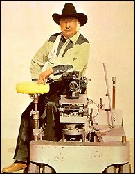

PART SIX:
THE COMMODORE'S MESSENGERS 1977-1982
When you move off a point of power, pay all
your obligations on the nail, empower all your friends completely and move off with your
pockets full of artillery, potential blackmail on every erstwhile rival, unlimited funds
in your private account and the addresses of experienced assassins and go live in
Bulgravia [sic] and bribe the police.
- L. RON HUBBARD, HCO
Policy Letter, "The Responsibilities of Leaders,"
February 12, 1967
CHAPTER ONE
Making Movies
In the late 1960s aboard the Apollo, Hubbard
used the children of Scientologists to run messages. He set them up with their own
"Org," and their own child Ethics Officers, one of whom was only eight years
old. Eventually they came to be known as the Commodore's Messenger Org, or CMO. They grew
up around Hubbard, usually separated from their parents.
 Several former members of the CMO have
given full and shocking accounts of their time with Hubbard. In addition to carrying
messages, Messengers looked after all the Commodore's personal needs. Teenage girls (right)
wearing white hot pants would put out his clothes for him, prepare his shower, dress him,
change the music on his tape recorder, light his cigarettes, even catch the ash as it
fell. The CMO Household Unit would rinse Hubbard's washing seven and later as many as
seventeen times to rid it of the vaguest hint of the smell of soap. There was a Messenger
on "watch" twenty-four hours a day to attend to his slightest whim. Several former members of the CMO have
given full and shocking accounts of their time with Hubbard. In addition to carrying
messages, Messengers looked after all the Commodore's personal needs. Teenage girls (right)
wearing white hot pants would put out his clothes for him, prepare his shower, dress him,
change the music on his tape recorder, light his cigarettes, even catch the ash as it
fell. The CMO Household Unit would rinse Hubbard's washing seven and later as many as
seventeen times to rid it of the vaguest hint of the smell of soap. There was a Messenger
on "watch" twenty-four hours a day to attend to his slightest whim.
The story of Messenger Tonja Burden is compelling. Her
parents were enthusiastic Scientologists, and encouraged their daughter to join the Sea
Org in March 1973, when she was only thirteen. A few months later, she was separated from
them and sent to the Apollo. In September, her parents left the Sea Organization,
and Scientology. Tonja remained in the custody of the Sea Org. Legally she was beyond
their reach, on a Panamanian vessel far from U.S. waters. She was told that her father had
been declared Suppressive. Nonetheless, she wanted to go home, and tried to persuade her
seniors that she could convince her parents to rejoin Scientology. She says she was told
to Disconnect, which "meant no more communication with my parents. They told me that
my parents would not make it in the world, but that I would make it in the world."
She was assigned to "Training Routines" to
teach her the duties of a Commodore's Messenger:
During the Training Routines, myself and two
others practiced carrying messages to LRH. We had to listen to a message, repeat it in the
same tone, and practice salutes.
"Ghosting" was on the job training
where I learned how to serve LRH. I followed another messenger around and observed her
carry his hat, light his cigarettes, carry his ashtray, and prepare his toiletries.
Eventually, I performed those duties.
As his servant, I would sit outside his room
and help him out of bed when he called "messenger." I responded by assisting him
out of bed, lighting his cigarette, running his shower, preparing his toiletries and
helping him dress. After that I ran to the office to check it, hoping it passed
"white-glove" inspection [if their was the slightest mark on a white glove run
over a surface, the whole area would have to be recleaned]. He frequently exploded if he
found dust or din or smelled soap in his clothes. That is why we used 13 buckets to rinse
....
While on the Apollo, I observed
numerous punishments meted out for many minor infractions or mistakes made in connection
with Hubbard's very strict and bizarre policies. On a number of occasions, I saw people
placed in the "chain lockers" of the boat on direct orders of Hubbard. These
lockers were small, smelly holes, covered by grates, where the chain for the anchor was
stored. I saw one boy held in there for thirty nights, crying and begging to be released.
He was only allowed out to clean the bilges where the sewer and refuse of the ship
collected. I believe his "crimes" were taking or using a musical instrument, I
believe a flute, of someone else [sic] without permission.
This is how Tonja summed up her days in the CMO:
"I was in Scientology from the age of thirteen to the age of eighteen. I received at
some times $2.50 per week pay, and at other times approximately $17.20 a week. I received
no education."
Tonja Burden remained in the Commodore's Messenger Org
until November 1977, when, aged eighteen, she made her escape from Scientology. In 1986,
the Scientologists paid her an out of court settlement to abandon a suit she had brought
for kidnapping.
In October 1975, when the Apollo finally ran
out of ports in which to berth, Hubbard flew ashore with a small CMO unit. When he fled to
Washington, DC, in 1976, he was again accompanied by a small CMO unit. The CMO became
Hubbard's eyes and ears in the new Flag Land Base, from whence the Scientology Church was
controlled. They were known as CMO CW for Commodore's Messenger Organization, Clearwater.
Hubbard was at "Winter Headquarters,"
codenamed Rifle, his hacienda in La Quinta, from October 1976 until July 1977. In one of
the few Scientology "technical bulletins" written while there, he took a
characteristic swipe at the medical profession: "Doctors are often careless and
incompetent, psychiatrists are simply outright murderers. The solution is not to pick up
the pieces for them but to demand medical doctors become competent, and to abolish
psychiatry and psychiatrists as well as psychologists and other famous Nazi criminal
outgrowths." 1
This was the view of the outside world which Hubbard implanted into his naive, adolescent
Messengers.
Commodore's Messenger Anne Rosenblum joined Hubbard's
retinue at La Quinta in the late Spring of 1977. His appearance surprised her: "He
had long reddish-grayish hair down past his shoulders, rotting teeth, a really fat gut,
and I believe at that time he had a full beard for 'disguise.' He didn't look anything
like his pictures." 2
In July, with the FBI raids of the Guardian's Offices
in Los Angeles and Washington, Hubbard went into even deeper seclusion. One of his two
controlling lines into Scientology had been through the GO in Los Angeles. He fled with
three of his Messengers. It was obvious to Hubbard that for the GO to have been caught it
must be riddled with Suppressives. Communication to the GO was therefore dangerous, and
the CMO became his only remaining link with the Church. The young Messengers had not
suffered the corruption of the outside (or "wog") world. They were the children
of Scientologists, often indoctrinated since birth, and many had spent their formative
years in the company of the Commodore. Now the key Messengers, nearly all girls, were in
their late teens, and ferociously dedicated to their Commodore. From this point, Hubbard
would increasingly place his trust in them.
Hubbard, with three Messengers, left for Sparks,
Nevada, in the dead of night, in Hubbard's station-wagon, Beauty. They drove away
from the hacienda with their lights off, so pursuit could be readily detected. Hubbard had
stomach trouble throughout the trip. Perhaps his old "wound," the ulcer which
still provided him with a veteran's pension, was acting up? A scheme went into effect
almost immediately to camouflage Hubbard, and keep him hidden from the world. The two
older Messengers were married, under assumed names. The marriage was bigamous for both of
them, but legal considerations rarely stopped close devotees from serving Hubbard. The
bigamists then claimed that Hubbard was their elderly grand-uncle, and the third Messenger
a cousin, and set up house together.
Hubbard stayed in seclusion for almost six months,
maintaining control of the Scientology Church through his Messengers. He used the time to
outline thirty-three Scientology training films, writing the scripts for fifteen. He also
wrote a peculiar screenplay called Revolt in the Stars. Despite his admonitions
that OT3 was lethal to the uninitiated, Revolt in the Stars centered on the
supposed incidents of seventy-five million years ago, providing many new details. The evil
prince Xenu, perpetrator of the massacre of millions, was apparently assisted in his
malicious deeds by the Galactic Minister of Police, Chi, and the Executive President of
the Galactic Interplanetary Bank, Chu. Along with Chi and Chu, we find Mish, one of the
few "Loyal Officers" to survive the catastrophe, the Lady Min, and the heroic
Rawl, whom one suspects is the Hubbard character.
By December 1977, Hubbard could no longer resist the
temptation to turn his scripts to celluloid. The would-be spectacular Revolt in the
Stars was too ambitious, and would require the skills and budget of the movie Star
Wars, but he could make a start with Scientology promotional and Tech films. The Tech
films were to be demonstrations of good auditing practice. Hubbard moved back to winter HQ
at La Quinta.
Two properties were purchased in Indio, California. A
ten-acre ranch, codenamed Monroe, became a barracks for the CMO crew who made the Tech
films. The 140-acre ranch where shooting actually took place was called Silver, a popular
codename, it seems. In the grapefruit orchards of Silver, a huge barn was built,
camouflaging Hubbard's film studio.
A recruitment drive was launched in the Scientology
world for professionals experienced in music or film. At the age of
fifteen, Ver-Dawn
Hartwell left school to join the Commodore's Messenger Organization. Her older sister had
been involved in Scientology for several years. Their parents were accomplished dancers,
and had just finished the introductory Communication Course when they were approached by
recruiters for the "CMO Cine Org." They were lured out to the desert with glib
promises of excellent pay, exciting work and a beautiful location. They were even shown
photographs of the resort hotel they would be staying in - in Clearwater. Instead they
ended up in the desert in the squalor of Monroe, with the rest of the Cine Org.
Adell and Ernie Hartwell had given their family and
friends the address of their supposed destination. They were surprised when the
Scientologist who met them in Los Angeles checked to see if the car was bugged, and drove
down sidestreets to make sure they were not being followed. He explained that the
precautions were because Hubbard's whereabouts were top secret.
Ernie was startled when they arrived: "I was
absolutely shocked to see everybody running around in shorts, ragged clothes, dirty, and
unkempt .... They put us in a ... little three-room shack on the edge of the ranch ... We
go inside and what a mess . . . the place was totally overrun with bugs, insects ... The
facilities consisted of a mattress on the floor . . . when somebody turned the lights on,
of course, it stirred up all the bugs and everything began to fly all over the
place."
The Hartwells set to work, initially on a schedule
starting at seven in the morning and finishing at eleven or twelve at night. In spite of
their protests, they were given no free time, even on weekends. They were told the
recruiter who had lied to them about the wonderful pay and working conditions was being
disciplined. The same old Scientology excuse, "he's been removed." It did not
help.
Adell Hartwell was confused by the set up:
The main thing that I disliked... before we
could see the place, we had to be programmed on the lies that we had to tell. If we ran
into one of our friends, we had to tell a lie to them and tell them we were just there for
a vacation. We had the man's name and everything to give. We had to go twenty-five miles
to use the telephone, and . . . usually them was somebody with us . . . There was [sic]
no papers . . .
We were schooled on how to get away from
process servers, FBI agents, any government official or any policeman who wanted anything
to do with Hubbard .... There was [sic] four different ways that they trained us
to handle them, even if... [we] had to use . . . physical force. And that went on for
days, that training. One of us would be the FBI agent and the other one would be who we
are... until we had it down pat.
. . . We were just like we had been cut off
from the world. We were behind closed - locked doors with curtains always pulled .... We
were to hide anything pertaining to the word "Scientology" in books or anything
that would disclose that it was the Church of Scientology ...
Anytime we left from one building to another,
everything that we carried had to be in sacks. There was nothing that could be visible
that had "Scientology" on it .... Fred Roth was put in the RPF [Rehabilitation
Project Force] because he said the word "Scientology" on the golf course.
All outgoing mail was censored, and all incoming mail
came via Clearwater. Ernie Hartwell was a Navy veteran, so Adell had not led a sheltered
life, even so she was startled by Hubbard's turns of phrase:
I was in the shed one day, the wardrobe,
working... I hadn't met Hubbard at this time. And I heard this terrible screaming filthy
language like I had never heard before. I had something in my hand and it fell to the
floor and my mouth flew open. I said, "Who in the world is that?" And they said
it was the Boss, because we weren't allowed to use the word "Hubbard" for
security reasons. And I said, "You mean the leader of the Church speaks like
that?" And they said, "Yes. He doesn't believe in keeping anything back."
Ernie confirmed this: "He was a screaming maniac
.... He'd tell you to do one thing and turn around two minutes later and tell you not to
do it." Many people who were once close to Hubbard have remarked on his screaming
fits.
 In her five month stay, Dell never saw
Hubbard vary his wardrobe (right): "He's a big man with a big stomach. His
hair was long and shabby - gray, with reddish spots, and he always wore pants that were
way too big with one suspender, and he always had a bandana and a cowboy hat." 3
In keeping with Hubbard's dust phobia, the set had to
be washed down, with special odor-free soap, before he arrived each day, and rinsed four
times over with clean water. A "white glove inspection" would take place. This
could be problematical when sets had just been painted. The crew would desperately use
anything at hand to dry the paint, after a lookout atop a pole sighted Hubbard's car in
the distance. Sets which would have taken Hollywood weeks to prepare had to be built in a
single day. Filming was usually done at night.
People with a fever would be "quarantined"
in a ten by twelve foot room. Adell Hartwell says that at one time there were thirteen
teenagers crammed in, all running fevers, and all still smoking (cancer being the result
of engrams or body thetans or whatever, supposedly granting Scientologists immunity).
Hubbard would arrive at eight in the evening, and the
crew would slavishly follow his screamed instructions until seven the next morning with a
single half-hour break, but nothing to eat or drink.
As a makeup assistant, Adell Hartwell helped Hubbard
to satisfy one of his obsessions. Gallons of imitation blood were prepared:
Did he ever like those films to be bloody ....
We'd be shooting a scene and all of a sudden he'd yell "Stop! Make it more gory, make
it more gory." We'd go running out on the set with all this Karo syrup and food
coloring and we'd just dump it all over the actors. Then we'd film some more and he'd stop
it again and say "it's not gory enough." And we'd throw some more blood on them.
. . . We were doing a scene where they were
bombing the FBI office . . . and we had so much blood on those actors . . . we couldn't
even get enough on them to suit Hubbard. We had guys' legs off, there were hands off, arms
- I mean, it was a mess from the word go. We had so much blood on those actors that they
had to take their clothes and all and soak in the shower before they could undress. This
is what Hubbard wanted.
This film about the FBI was shown to U.S.
Scientologists through the time leading up to the trial of Mary Sue Hubbard and other
Guardian's Office staff. On one occasion, Hubbard ordered so much gore that two actors had
to be cut out of their clothes which had stuck fast.
The Commodore would explode into furious tantrums.
According to Adell, "I actually saw him take his hat off one day and stomp on it and
cry like a baby. I have seen him just take his arm... and throw it wild and hit girls in
the face .... One girl would follow him with a chair. If he sat down, that chair had to be
right where he was going to sit. One girl missed by a few inches; he fell off of it, and
she was put in the RPF."
The crew was kept under intense and constant pressure.
Even Hubbard's cook would work from six in the morning to ten at night simply to prepare
three meals to the Commodore's satisfaction. Hubbard frequently complained that the crew
was overspending. At one time they had to use pages from phone directories for toilet
paper, because of the supposed extravagance. Conditions were dreadful even for the crew
who were in "good standing," but for those on the Rehabilitation Project Force
conditions were well nigh impossible. RPFers kept their few clothes in boxes, and slept on
mattresses thrown out in the open through the few daylight hours allotted to them.
Adell's teenage daughter was put on the RPF, and Adell
was traumatized when she was not even allowed to talk to her: "I would see her
dragging her mattress from one shade tree to another. I said, 'Why are you doing this?'
And she was ill and she couldn't be in with the others, and so she was hunting shade . . .
it's 117 degrees."
Ernie Hartwell takes up the story: "We were not
programmed into Scientology; we were not brainwashed. We were not following a great
guiding light or any great pull that L. Ron Hubbard had .... All the other people...
accepted those conditions .... They didn't mind the bugs and the snakes... the lousy food,
the lousy living conditions, all the dirt."
The Hartwells decided they were not going to take any
more, and were told they would have to appear in front of a "Board" before they
could leave. They were kept waiting for two weeks. Throughout this time the Scientologists
worked on Adell, and on the day they were due to go, she told Ernie she was staying
behind. They had been married for nearly fifteen years. She was ill, and both of them felt
that Scientology auditing would help her. Ernie resolved to go back to Las Vegas, and find
a job to help pay for any medical treatment that Adell needed to supplement her auditing.
Ver-Dawn was determined to stay close to Hubbard.
Ernie said, "It seems like they do everything
they can to destroy families and happiness. For me... it was the hardest thing I ever had
to do in my life, leaving them there in the condition that they were in and leaving them
with a man that was totally insane."
Back in Las Vegas, Ernie found work. About six weeks
after he left the CMO Cine Org, he was visited by a Scientologist "chaplain,"
who accused him of disclosing Hubbard's whereabouts. Having done this, the Scientologist
produced the Hartwells' marriage license, and said Adell wanted a divorce. Ernie was
speechless. Then he was asked if Adell and Ver-Dawn could use his address for passport
applications, as they were leaving the United States. Adell had been told that because
Ernie had given away Hubbard's location, the whole crew would have to go overseas. She was
told that her marriage license would be needed to obtain a passport. She knew nothing
about any divorce.
The recruiters had promised that Adell Hartwell would
be given special auditing and proper medical care for her illness. No treatment was given,
and her condition was growing progressively worse. One day she worked without eating. It
was 102 degrees in the shade:
By five-thirty I just got deathly ill, and I
told them I had to leave. And I staggered quite a ways .... I fell in the ditch; it was
like I was drunk .... They came in and woke me up and said it was
seven o'clock I had to
go down because Hubbard was going to be on the set. And I wouldn't do it. And I was
written up [reported to Ethics].
. . . Another time I complained I had to go
home because I wasn't being treated. I was thin and bleeding and in quite severe pain, and
they took me right in and put me on the Meter .... The next night they had us scrubbing
the barn; we started at six o'clock and we scrubbed that barn until four o'clock in the
morning... anybody that ran a fever was immediately put out of commission. But anybody
that was ill and not running a fever, they were made fun of and ridiculed.
Nearly three months after their separation, Adell
Hartwell left the film crew, and rejoined her husband. Their next shock was receiving a
"Freeloader Bill" for the auditing and training Adell had received during her
five month stay in the desert. The bill was for $5,500. When Ernie complained to the Las
Vegas Guardian's Office, he was told that they had neglected to bill him the $5,000 he
owed, bringing the total to $10,500.
A few days later, Ernie Hartwell was asked to sign a
bond for $30,000, payable if he said anything bad about Scientology. Infuriated, Ernie
pointed out that he had kept his part of every bargain, while the Scientologists had kept
to nothing. He demanded a letter from them, saying they would leave him alone.
After half a dozen futile meetings, the Scientologists raised their demands. Ernie was to
sign a statement saying he had been an alcoholic all his life, had abused his children,
had been a poor father and provider, had murdered his father, and owed Scientology
$60,000. The threats and harassment continued for several months. Even the FBI raids had
failed to halt the excesses of the Guardian's Office.
Eventually, worn down and scared half out of his wits,
Ernie felt compelled to do exactly what the GO was trying to prevent. To protect Adell and
himself, he went to the police and told them everything. Somehow the GO persuaded a
newspaper to run a story saying Ernie Hartwell had tried to extort money from Scientology.
Television picked it up. Ernie was one man against a powerful organization. Eddie Waiters,
who was working for the Las Vegas GO at the time, has since confirmed the Hartwells'
claims of harassment. Another witness has testified that Hubbard himself ordered that
Ernie Hartwell's confessional folders be "culled" for anything reprehensible. 4
Indeed, there are many witnesses to the systematic
"culling" of confessional folders throughout Scientology over a period of many
years, with the purpose of finding material to blackmail individuals into conformity with
Church objectives. Mary Sue Hubbard wrote an order in 1969 for the GO to use this
information gathering tactic. During the making of the Tech films, most of the crew's
folders were similarly culled for potentially useful information.
Most of the energy put into the films was wasted
anyway, as Adell has said: "Funny thing about those movies is that they never get
shown to anyone. Hubbard would always blame somebody for screwing it up and order the
movie shelved." 5
In 1986, the Church of Scientology paid $150,000 to
Adell Hartwell in a secret settlement of her litigation against it.
While pursuing his directorial dreams and bloodlust
through the Tech films, Hubbard once more revised Dianetics. It became New Era Dianetics,
or "NED." Hubbard had also been railing against LSD, and devised the "Sweat
Program." Hubbard was convinced that LSD "sticks around in the body," a
questionable hypothesis, as LSD is both unstable and water-soluble. Hubbard's program was
supposed to "flush" traces of LSD from the body. Anyone who had taken LSD was to
take a mega-dose of vitamins, and a teaspoon of salt a day. The diet was restricted to
fruit, fruit juice and "predigested liquid protein." The victim was then to jog
in a rubberized nylon sweat suit, for at least an hour a day. 6
Some unfortunates spent months on this program, until it was eventually replaced with the
"Purification Rundown." There is no doubt that this bizarre program severely
damaged some people's health.
Hubbard did not undertake the Sweat Program himself,
but he did have a great deal of New Era Dianetic auditing. It did nothing for his temper
tantrums. The Tech film project ground to a halt shortly before Adell Hartwell left.
Hubbard was in a very bad way.
FOOTNOTES
Additional sources: Tonja
Burden affidavit, 1982; Hartwells testimony in Clearwater Hearings, May 1982; interviews
with four former CMO executives and one former Sea Org executive
1. Technical Bulletins of
Dianetics & Scientology vol. 11, p. 259
2. Anne Rosenblum affidavit,
p.22
3. St. Petersburg Times,
"Scientology," p.20
4. Vol. 3 of transcript of
Clearwater Hearings, 1982, p.260; Waiters in vol. 25 of transcript of Church of
Scientology of California vs. Gerald Armstrong, Superior Court for the County of Los
Angeles, case no. C 420153, p.4394-7; Douglas in Armstrong vol. 25, p.4437; Nancy
Dincalci in Armstrong vol. 20, pp. 3530f; Janie Peterson in Clearwater Hearings
vol. 4, p. 81; Guardian Order 121669, 16 December 1969, by Mary Sue Hubbard
5. St. Petersburg Times,
"Scientology," p.20
6. Technical Bulletins of
Dianetics & Scientology vol. 11, p. 234 |